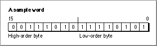
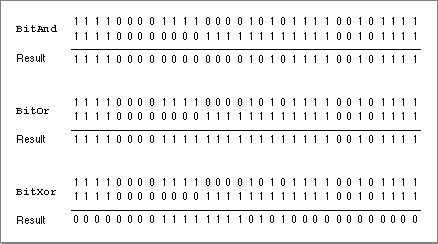
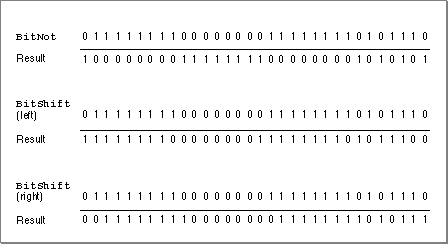

Using the Mathematical and Logical Utilities
This section describes how you can take advantage of the Mathematical and Logical Utilities supported by the Operating System, it describes how you can
- test and set individual bits, perform logical operations on long words, divide a long word into its high word and low word, and set memory values directly.
- use the
PackBitsandUnpackBitsprocedures to compress and decompress data.- seed the pseudo-random number generator and obtain random integers or long integers within a given range.
- perform simple calculations involving fixed-point numbers and convert fixed-point numbers to other numeric types.
Performing Low-Level Manipulation of Memory
The Mathematical and Logical Utilities provide several routines to perform bit-level and byte-level manipulation of memory. These routines are provided primarily for Pascal programmers. C and assembly-language programmers can use these routines also; however, in general it is easier and more efficient to achieve the same effects as these routines by using built-in C or assembly constructs.Testing and Manipulating Bits
TheBitTstfunction lets you test whether a given bit is set. The function requires that you specify a bit through an offset from a pointer. Listing 3-1 is an example of an application-defined function that tests a specified bit.FUNCTION MyTestBit (bytePtr: Ptr; bitNum: LongInt): Boolean; BEGIN MyTestBit := BitTst(bytePtr, bitNum); END;ThebytePtrparameter specifies a pointer to a byte in memory. ThebitNumparameter specifies the number of the bit to be tested as an offset frombytePtr. For example, you can use the application-defined functionMyTestBitto test specific bits of the word specified in Figure 3-8.Figure 3-8 A sample word (in MC680x0 notation)

Using the word in Figure 3-8, the call
BitTst(myPtr, 0)returnsFALSEbecause bit number 0 in the first byte is not set. But the callBitTst(myPtr, 11)returnsTRUEbecause bit number 3 in the second byte is set.When using the
BitTstfunction, be sure to specify bits as positive offsets from the high-order bit rather than using the normal MC680x0 notation (see "Reversed Bit-Numbering" on page 3-7). Listing 3-2 illustrates a use of theBitTstfunction in conjunction with a bit traditionally identified with MC680x0 notation.Listing 3-2 Determining whether a handle is purgeable using the
BitTstfunctionFUNCTION MyHandleIsPurgeable (myHandle: Handle): Boolean; CONST kMyBitNum68000 = 6; VAR propertiesByte: SignedByte; BEGIN propertiesByte := HGetState(myHandle); MyHandleIsPurgeable := BitTst(@propertiesByte, 7 - kMyBitNum68000); END;TheMyHandleIsPurgeablefunction defined in Listing 3-2 determines whether a handle references a relocatable block by examining the properties byte for that handle. The purgeable bit is, in MC680x0 notation, bit number 6 of the properties byte; becauseBitTstuses reverse numbering, so bit number 7 - 6 = 1 is tested.The
BitSetandBitClrprocedures require that you specify bits using the same scheme as with theBitTstprocedure (see "Reversed Bit-Numbering" on page 3-7). TheBitSetprocedure sets a bit (that is, sets its value to 1), whileBitClrclears a bit (that is, sets its value to 0). For example, if you issue the following two calls to theBitSetprocedureBitSet(bytePtr, 5); BitClr(bytePtr, 7);bit 5 (using the reversed bit-numbering scheme) of the byte in memory pointed to by thebytePtrparameter is set to 1, and bit 7 (using reversed bit-numbering) of the same byte is cleared.
- Note
- In C, you can test bits by using the
&operator. You can set and clear bits by using the|=and&=operators, respectively. In all three cases, one operand should be the byte (or word or long word you wish to manipulate), and the other should be a value in which only the relevant bit is set or cleared. Many Pascal compilers also support built-in operations that accomplish these tasks efficiently. Note that C uses the MC680x0 bit-numbering scheme (normal bit-numbering).
Performing Logical Operations on Long Words
The Macintosh Operating System provides routines that allow you to perform basic bitwise logical operations, including theAND,OR, andXORoperations on long words. Each of the functions takes two long integers as parameters and returns another long integer. You can use these functions on other 32-bit data types, as long as you cast values toLongIntas required by your compiler. The functions that perform theAND,OR, andXORoperations areBitAnd,BitOr, andBitXorrespectively. Figure 3-9 illustrates these functions.Figure 3-9 The
BitAnd,BitOr, andBitXorfunctions
As shown in Figure 3-9, the
BitAndfunction returns a long word in which each bit is set if and only if the corresponding bit is set in both long words passed in. TheBitOrfunction returns a long word in which each bit is set if and only if the corresponding bit is set in either long word passed in. TheBitXorfunction returns a long word in which each bit is set if and only if one but not both of the corresponding bits in the long words passed in is set.A common use of the
- Note
- In C, you can achieve the same effects as the
BitAnd,BitOr, andBitXorfunctions by using the&,|, and^operators, respectively, in conjunction with the=assignment operator. Many Pascal compilers also support built-in operations that accomplish these tasks more efficiently.BitAndfunction is to mask out certain bytes within a long word (that is, clear all bits in those bytes). For example, to mask out the second byte of a long word stored in a variablevalue, you could write the following code:value := BitAnd(value, $FF00FFFF);The Macintosh Operating System also offers two bit-manipulation routines that simulate unary operators, theBitNotand theBitShiftfunctions, which perform theNOToperation and bit-shifting, respectively. You specify the long integer on which to perform the operation as a parameter to theBitNotandBitShiftfunctions. In addition, you specify how to shift the bits as a parameter to theBitShiftfunction.Figure 3-10 illustrates
BitNotandBitShift.Figure 3-10 The
BitNotandBitShiftfunctions
As shown in Figure 3-10, the
BitNotfunction returns a long word in which each bit is set if and only if the corresponding bit in the long word passed in is not set. TheBitShiftfunction shifts bits--to the left if thecountparameter is greater than 0 and to the right if thecountparameter is less than 0. (Shifting to the left means shifting towards the high-order bit.) When shiftingcountbits to the left, thecountlow-order bits are set to 0; when shiftingcountbits to the right, thecounthigh-order bits are set to 0.
- Note
- In C, you can achieve the same effect as the
BitNotfunction more efficiently by using the^operator on the value whose bits are to be inverted and the value $FFFFFFFF. You can achieve the same effect as theBitShiftfunction more efficiently by using the>>operator for shifting to the right and the<<operator for shifting to the left. Many Pascal compilers support built-in operations that accomplish these tasks efficiently.Extracting a Word From a Long Word
Often a long word stored as a variable of typeLongIntis used to hold two different pieces of information in its two different words. For example, when a disk-inserted event occurs, themessagefield of the event record contains the drive number in the low-order word and a result code in the high-order word. To access these two types of information, you can use theHiWordandLoWordfunctions. For example:VAR x: LongInt; high, low: Integer; high := HiWord(x); low := LoWord(x);TheHiWordfunction returns the high-order word of the long word passed in, and theLoWordfunction returns the low-order word of the long word passed in. You can use these functions with types other thanLongIntandInteger, as long as they are 4 bytes and 2 bytes, respectively, and, if you are using Pascal, you cast the quantities to the correct types.The Operating System does not provide any routines that allow you to set the high-order or low-order words of a long integer. It might seem that you could set the low-order word by calling the
BitAndfunction with the original long integer and the low-order word as parameters, and set the high-order word by callingBitAndwith the original long integer and the high-order word shifted left 16 bytes as parameters. The problem with this approach is that when you pass an integer variable toBitAnd, the compiler automatically casts the variable to a long integer. But for both integers and long integers, it is the leftmost byte that indicates the sign of the number. So when a negative integer is cast to a long integer, the low-order word of the long integer is not equal to the original integer.However, you can use the Memory Manager's
BlockMoveprocedure to directly copy the bytes of a word to the high-order or low-order word of a long word. See Inside Macintosh: Memory for more information. Or, if you wish to set both the high-order word and the low-order word of a long integer at once, you can define the following type:TYPE MyLongWordType = PACKED RECORD myHiWord: Integer; {high-order word} myLoWord: Integer; {low-order word} END;Then you can define a variable of this type and set the high-word and low-word fields. By casting a long integer toMyLongWordType, you could also extract a word from a long word more efficiently than you can using theHiWordandLoWordfunctions.Hardcoding Byte Values
Occasionally, you might need to set a group of bytes in memory to specific hexadecimal values. For example, suppose your application uses a data structure with a 16-byte flags field and you wish to initialize each of the bytes in the flags field to particular values. While there are a number of ways that you might do this, theStuffHexprocedure provides a simple, though usually inefficient, option.You provide a pointer to any data structure in memory, and a string of hexadecimal digits as parameters to the
StuffHexprocedure. For example:StuffHex(@x, 'D34E0F29');Of course, it would in this case be just as easy--and more efficient--to write the following code:x := $D34E0F29;TheStuffHexprocedure is perhaps most useful when you wish to assign a large or odd number of bytes or set the values of particular bytes within a variable. For example, to set the low-order word of a long integerxto $64B5, you could use the following code:StuffHex(Ptr(ORD4(@x) + 2), '64B5');You could use this code rather than use the techniques described in the previous section, "Extracting a Word From a Long Word."Note that
PtrandORD4are used here simply to satisfy Pascal type-casting rules.The
StuffHexprocedure might also be useful if you are developing a calculator or other application that allows users to enter hexadecimal values directly.Compressing Data
ThePackBitsandUnpackBitsprocedures, introduced in "Data Compression" on page 3-8, allow you to compress (or decompress) data stored in RAM. Typically, you usePackBitsbefore writing data to disk andUnpackBitsimmediately after writing data from disk.Both procedures require that you pass in the
srcPtranddstPtrparameters values that point to the beginning of the source buffer and the destination buffer, respectively. ThePackBitsprocedure compresses the data in the source buffer and stores the result in the destination buffer; theUnpackBitsprocedure decompresses the data in the source buffer and stores the result in the destination buffer. You must also pass to thePackBitsprocedure and theUnpackBitsprocedure a value that specifies the size of the original, uncompressed data. Because you must pass this information toUnpackBits, you typically use these procedures only to compress a data structure with a fixed size, so that this size can be passed as a parameter toPackBits.Your application is responsible for allocating memory for both the source and the destination buffers. When
PackBitsandUnpackBitscomplete operation, thesrcPtranddstPtrparameter are incremented so thatsrcPtrpoints to the memory immediately following the source bytes, anddstPtrpoints to the data immediately following the destination bytes. This feature was originally designed to allow you to pack large buffers of data at once in chunks, althoughPackBitscan automatically chunk large data buffers in versions of system software 6.0.2 and later. In any case, your application must store copies ofsrcPtranddstPtrto access the start of the source or destination buffer after callingPackBitsorUnpackBits.One use of the compression routines might be to compress resources in your application's resource fork. Many types of resources can be made significantly smaller by compression. Listing 3-3 shows how you can pack data stored in a handle to a specified resource.
Listing 3-3 Packing data to a resource
PROCEDURE MyAddPackedResource (srcData: Handle; theType: ResType; theID: Integer; name: Str255); VAR srcBytes: Integer; {bytes of unpacked data} maxDstBytes: LongInt; {maximum length of packed data} dstData: Handle; {packed data} srcPtr: Ptr; {pointer to unpacked data} dstPtr: Ptr; {pointer to packed data} srcProperties: SignedByte; {properties of source handle} BEGIN srcBytes := GetHandleSize(srcData); {find size of source} {calculate maximum possible } { size of packed data} maxDstBytes := srcBytes + (srcBytes + 126) DIV 127; dstData := NewHandle(maxDstBytes + 2); {allocate memory for source, } { plus length info} IF dstData <> NIL THEN {check for NIL handle} BEGIN BlockMove(@srcBytes, dstData^, 2); {copy source into buffer} srcPtr := srcData^; {copy source pointer} dstPtr := Ptr(ORD4(dstData^) + 2); {copy destination pointer} PackBits(srcPtr, dstPtr, srcBytes); {pack source to destination} {shrink destination data} SetHandleSize(dstData, ORD4(dstPtr) - ORD4(dstData^)); srcProperties := HGetState(srcData); {get source handle properties} IF BitTst(@srcProperties, 2) THEN {is source a real resource?} RemoveResource(srcData); {remove current resource} {add to resource file} AddResource(dstData, theType, theID, name); WriteResource(dstData); {write resource data} DetachResource(dstData); {detach from resource map} DisposeHandle(dstData); {dispose of destination data} END; END;TheMyAddPackedResourceprocedure declared in Listing 3-3 initially allocates a destination buffer to hold compressed data that is big enough to hold the compressed data in a worst-case scenario, plus 2 bytes to store information at the beginning of the resource about the size of the source data. BecausePackBitsdoes not move memory, the handle storing the destination buffer does not need to be locked. However, to prevent thePackBitsprocedure from changing the value of a master pointer, you should only pass copies of the dereferenced handle to the procedure. AfterPackBitsreturns,MyAddPackedResourcedetermines how much memory the compressed data takes up by computing how much thedstPtrvariable has changed.MyAddPackedResourcethen resizes the handle containing the compressed data to the appropriate size. Finally,MyAddPackedResourcewrites the new resource, after first removing the existing resource if the source handle is a handle to a resource. For more information on resources, see Inside Macintosh: More Macintosh Toolbox.Having used the
MyAddPackedResourceprocedure to compress resource data, your application needs to be able read the resource and decompress it using theUnpackBitsprocedure. Listing 3-4 shows how you might accomplish this.Listing 3-4 Decompressing data from a packed resource
FUNCTION MyGetPackedResource (theType: ResType; theID: Integer): Handle; VAR srcData: Handle; {handle to packed data} dstData: Handle; {handle to unpacked data} srcPtr: Ptr; {pointer to packed data} dstPtr: Ptr; {pointer to unpacked data} dstBytes: Integer; {number of unpacked bytes} BEGIN srcData := GetResource(theType, theID); {get the resource} BlockMove(srcData^, @dstBytes, 2); {read number of bytes of } { unpacked data} dstData := NewHandle(dstBytes); {allocate memory for } { unpacked data} IF dstData <> NIL THEN BEGIN srcPtr := Ptr(ORD4(srcData^) + 2); {copy source pointer} dstPtr := dstData^; {copy destination pointer} UnpackBits(srcPtr, dstPtr, dstBytes); {unpack source to } { destination} END; IF srcData <> NIL THEN {if there was a resource} BEGIN DetachResource(srcData); {detach from resource map} DisposeHandle(srcData); {dispose the resource} END; MyGetPackedResource := dstData; {return destination handle} END;TheMyGetPackedResourcefunction reads in a resource that has previously been packed, determines the size of the unpacked data by copying the first 2 bytes of the resource data, and allocates a relocatable block of this size. The remainder of the data is unpacked using theUnpackBitsprocedure, and the original packed resource data is disposed of.Obtaining Pseudorandom Numbers
TheRandomfunction makes it easy to obtain pseudorandom numbers. Before you useRandom, however, you should seed the pseudo-random number generator. Listing 3-5 shows a common technique for doing this.Listing 3-5 Seeding the pseudo-random number generator
PROCEDURE MySeedGenerator; BEGIN GetDateTime(randSeed); END;TheMySeedGeneratorprocedure defined in Listing 3-5 simply uses the Date and Time Utilities'GetDateTimeprocedure to copy the number of seconds since midnight, January 1, 1904, to the global variablerandSeed. You might use some other volatile long-word value--such as the mouse location--to seed the pseudo-random number generator, or you might even take a word from one source and a word from another. However, just usingGetDateTimeis sufficient for most applications.Sometimes you wish to obtain a pseudo-random integer from a large range of integers; for example, you might need a pseudo-random integer in the range of -20,000 to 20,000. Listing 3-6 shows how you might do this.
Listing 3-6
A simple way of obtaining a large random integer from a range
of pseudo-random numbersFUNCTION MyRandomLargeRange (min, max: Integer): Integer; VAR randInt: Integer; BEGIN REPEAT randInt := Random UNTIL (randInt >= min) AND (randInt <= max); MyRandomLargeRange := randInt; END;The MyRandomLargeRange function defined in Listing 3-6 simply calls theRandomfunction until it returns an acceptable value. This approach is efficient when you need a random integer from a range of integers that is wide, though not quite as wide as the range theRandomfunction returns by default. However, if you need a random number from a small range--for example, a random number from 1 to 10--the MyRandomLargeRange function is inefficient. Listing 3-7 shows an alternative approach.Listing 3-7 Obtaining a pseudo random integer from a small range of numbers
FUNCTION MyRandomRange (min, max: Integer): Integer; CONST kMinRand = -32767.0; kMaxRand = 32767.0; VAR myRand: Integer; x: Real; {Random scaled to [0..1]} BEGIN {find random number, and scale it to [0.0..1.0]} x := (Random - kMinRand) / (kMaxRand + 1.0 - kMinRand); {scale x to [min, max + 1.0], truncate, and return result} MyRandomRange := TRUNC(x * (max + 1.0 - min) + min); END;TheMyRandomRangefunction defined in Listing 3-7 first scales the integral value returned by theRandomfunction to a floating-point value from 0 up to, but not including, 1. The function then scales the result to a real number greater than or equal tominbut less thanmax + 1. By truncating extra decimal places, the correct result is achieved. Note that to force the compiler to perform floating-point calculations, all constants in the function are expressed as real numbers rather than as integers.Sometimes an application might require a pseudo-random long integer. Listing 3-8 shows how you can do this.
Listing 3-8 Obtaining a pseudo-random long integer
FUNCTION MyRandomLongInt: LongInt; TYPE MyLongWordType = PACKED RECORD myHiWord: Integer; {high-order word} myLoWord: Integer; {low-order word} END; VAR myLongWord: MyLongWordType; {random long word} BEGIN {obtain random high-order word} myLongWord.myHiWord := Random; {obtain random low-order word} myLongWord.myLoWord := Random; {cast and return result} MyRandomLongInt := LongInt(myLongWord); END;TheMyRandomLongIntfunction defined in Listing 3-8 uses a technique discussed in "Extracting a Word From a Long Word" on page 3-18 to stuff a pseudo-random number in the high-order word of a long integer and another pseudo-random number in the low-order word of the long integer. If you need to obtain a long integer within a specified range, you can define routines analogous to Listing 3-6 and Listing 3-7 but use theMyRandomLongIntfunction in place of theRandomfunction.Using Fixed-Point Data Types
Most high-level language compilers include built-in support for theFixedandFractdata types so that you can perform regular mathematical operations with fixed-point variables. Also, the algorithms for performing addition and subtraction onFixedandFractvariables are the same as the algorithms for performing such operations on variables of typeLongInt.The Operating System, however, includes several routines that allow you to convert
FixedandFractvariables to other formats, including SANE'sExtendeddata type, and allow you to perform some simple operations onFixedandFractvariables. If you need more sophisticated numeric functions, consult the Apple Numerics Manual.To perform multiplication and division of fixed-point numbers, you can use the
FixMul,FixDiv,FracMul, andFracDivfunctions, which allow you to multiplyFixedpoint numbers with each other or with other long integers.You can multiply and divide 32-bit quantities of different types using these functions. The format of the result in this case depends on the particular function being used. See descriptions of the individual functions in "Multiplying and Dividing Fixed-Point Numbers" beginning on page 3-38 for more information.
Using the
FracSqrt,FracCos,FracSin, andFixATan2functions, you can perform a few special arithmetic operations involving variables of typeFixedandFract.The
FracSqrtfunction allows you to obtain the square root of a variable of typeFract, interpreting bit 0 as having weight 2 rather than -2. TheFracCosandFracSinprovide support for the trigonometric cosine and sine functions. TheFixATan2function provides support for the arctangent function. The arguments to all of these functions should be expressed in radians, not in degrees.To convert among 32-bit numeric types, you can use the
- Note
- To provide fast trigonometric approximations, these trigonometric functions use values of Pi correct only to 4 decimal places. You should thus use alternative SANE routines when you require better precision.
Long2Fix,Fix2Long,Fix2Frac, andFrac2Fixfunctions.Each of the functions returns its parameter converted into the appropriate format.
You can also convert fixed-point values to and from the SANE
Extendedfloating-point type using theFix2X,X2Fix,Frac2X, andX2Fracfunctions.Two additional functions,
FixRatioandFixRound, allow you to perform special conversions on variables of typeFixed.The
FixRatiofunction returns the fixed-point quotient of thenumeranddenomparameters. TheFixRoundfunction rounds a variable of typeFixedto the nearest integer. If the value is halfway between two integers (0.5), it is rounded to the integer with the higher absolute value. To round a negative fixed-point number, negate it, round it, and then negate it again.The Operating System also provides the
- Note
- To convert a variable of type
Fixedto a variable of typeIntegersimply use theHiWordfunction to extract the integral component of the fixed-point number.LongMulprocedure that allows you to multiple two 32-bit quantities and obtain a 64-bit quantity.Table 3-2 summaries the routines that perform operations on the
FixedandFractdata types.Table 3-2 Routines for fixed-point data types
Routine Description FixMul Multiply a variable of type Fixedwith another variable of typeFixedor with a variable of typeFractorLongIntFixDiv Divide two variables of the same type ( Fixed,Fract, orLongInt) or divide aLongIntorFractnumber by aFixednumberFracMul Multiply a variable of type Fractwith another variable of typeFractor with a variable of typeFixedorLongIntFracDiv Divide two variables of the same type ( Fixed,Fract, orLongInt) or divide aLongIntorFixednumber by aFractnumberFracSqrt Compute the square root of a variable of type FractFracCos Obtain the cosine of a variable of type FixedFracSin Obtain the sine of a variable of type FixedFixATan2 Obtain the arctangent of a variable of type Fixed, Fract, orLongIntLong2Fix Convert a variable of type LongInttoFixedFix2Long Convert a variable of type FixedtoLongIntFix2Frac Convert a variable of type FixedtoFractFrac2Fix Convert a variable of type FracttoFixedFix2X Convert a variable of type FixedtoExtendedX2Fix Convert a variable of type ExtendedtoFixedFrac2X Convert a variable of type FracttoExtendedX2Frac Convert a variable of type ExtendedtoFractFixRatio Obtain the Fixedequivalent of a fractionFixRound Round a fixed-point number to the nearest integer LongMul Multiply two 32-bit quantities and obtain a 64-bit quantity